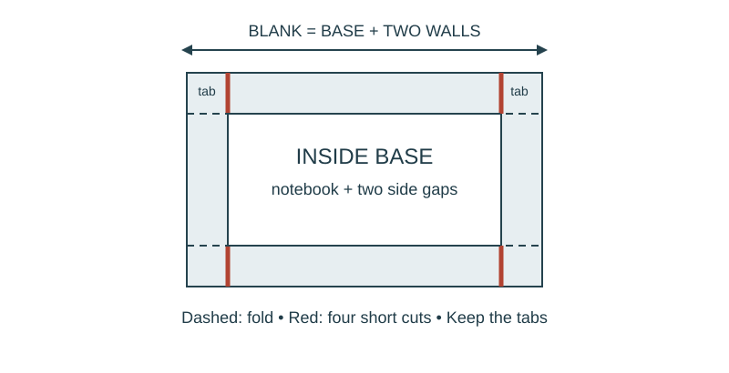

Job 01 · Make a fitted notebook tray
A paper tray that fits your closed pocket notebook, built by a partner from your work order.
110 minutes • Tape measure + pocket notebook • Name: __________________ Date: __________
Materials: Per student: pocket notebook, tape measure, pencil, about 3 sheets of letter paper. Per pair: scissors and a straightedge or folder edge; shared tape.

Brief · 15 min
- Put your notebook on the desk. What must another person know to make a tray that fits it? On scrap paper mark 2 3/8 in, then explain which tick is 1/8 in on your tape. This is a starting check, not a grade.
- Set up a dated notebook spread: sketch and readings on the left; calculation, decision, test, and revision on the right. Mark small sketches NTS unless drawn to a chosen scale.
- Work in pairs and rotate roles. Each student keeps an individual notebook and performs a tool action and a calculation.
Measure · 12 min
- Close your notebook. Sketch its cover, label length L and width W, and mark the endpoints you will use. Keep the tape straight and read to the nearest 1/16 in if your tape allows.
- Measure L and W yourself. Write units and tape resolution. Your partner checks the same endpoints with their tape; remeasure disagreements before choosing the values for your design.
- Keep your original readings. Circle the dimensions you will use; explain any change. The object is your closed notebook, not the worked-example notebook.
Plan · 28 min
- Calculate both base dimensions for YOUR notebook with 1/8 in clearance on each side. Add two 3/4 in walls to each base dimension to find your outer blank.
- Draw an NTS plan in your notebook. On a separate scrap, write a work order: owner, builder, base L/W, blank L/W, wall height, units, and a labeled sketch. Check that the blank fits your paper before cutting; join sheets if needed.
- Swap work orders. Ask one clarification before building. Keep your notebook calculation; your partner builds from the scrap.
Worked example
A model notebook is 5 1/2 in long and 3 1/2 in wide. Leave 1/8 in clear on EACH side and use 3/4 in walls. What blank is needed? Inside base = notebook dimension + 2 × side clearance. Blank = inside base + 2 × wall height. L: 5 1/2 + 1/4 = 5 3/4 in base; + 1 1/2 = 7 1/4 in blank. W: 3 1/2 + 1/4 = 3 3/4 in base; + 1 1/2 = 5 1/4 in blank.
Make · 23 min
- Mark the outer blank on paper and check both dimensions. Cut only the outside rectangle.
- Mark fold lines 3/4 in from all four edges. Keep the corner squares. From the TOP and BOTTOM edges, cut along the two vertical fold lines only as far as the first horizontal fold line: four short slits total.
- Fold all four walls upward. Fold each corner tab inward and tape it to the neighboring wall. Keep the base flat. This tray stays supported on the desk; do not carry the notebook in it.
Test · 21 min
- Return the tray to its owner. Insert and remove the closed notebook three times without forcing or tearing. Check that the notebook lies flat and that the tray base is not bowed.
- Compare the built base dimensions with the work order. Record one actual observation, then revise a fold, tab, dimension, or unclear work-order label. Retest and record what changed.
- If it already fits, keep the dimensions and improve a communication detail. A successful first attempt still needs evidence.
Explain · 11 min
- Complete the individual exit below before discussing answers.
- Add the test result, revision, and notebook page reference to your response. Use the notebook as evidence rather than retyping every page.
- Save the three selected responses and submit the lesson for teacher review. Show your physical work and notebook to the teacher. Clean up and return shared supplies.
Individual exit
Work independently. A notebook is 3 7/8 in wide. With 1/8 in clearance on EACH side and 3/4 in walls, calculate base width and blank width. Show both operations and units. If you add only one wall, how far too narrow is the blank? Finish with one observed result from YOUR tray and the revision or check you made.